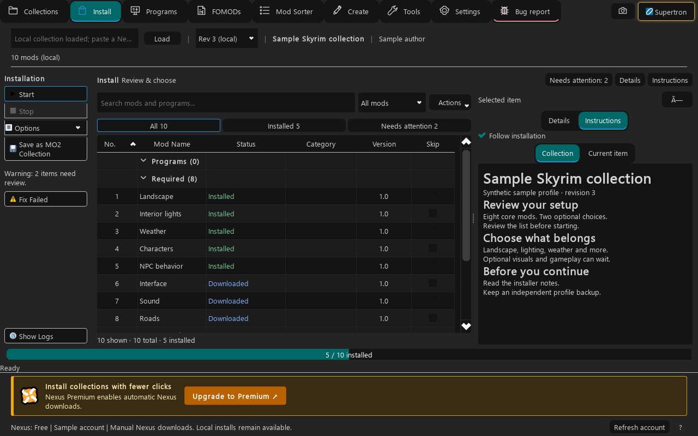
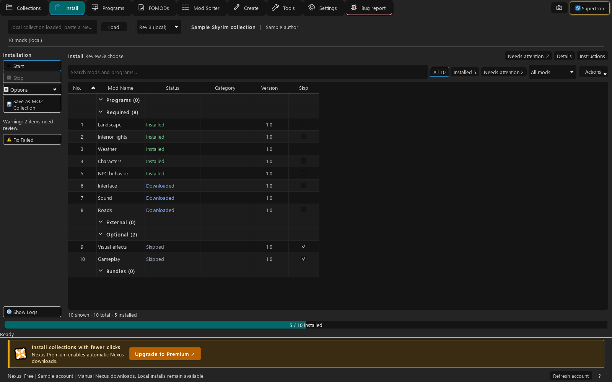
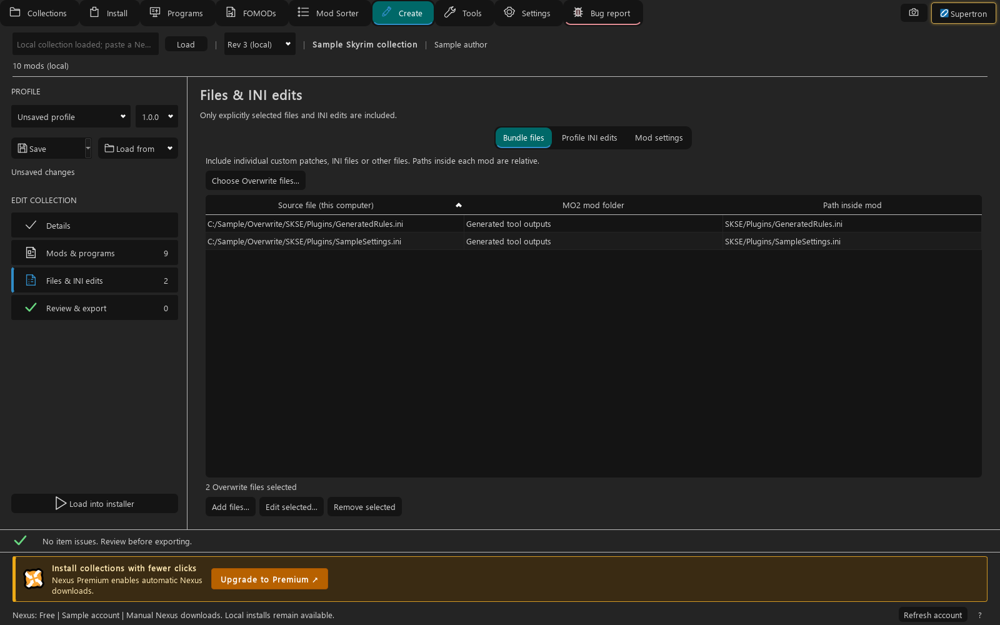
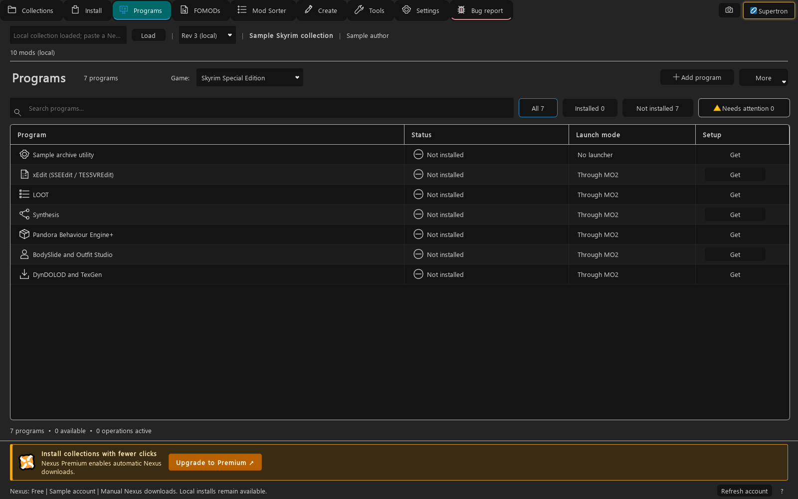

Choose the installer options
Open FOMOD installers, capture the options you want, and keep those choices with the collection for reuse with the matching archive.
How installer choices workCollections Manager for Mod Organizer 2
Install Nexus Collections. Build and share native MO2 Collections. Bring downloads, installer choices and modding tools together—and keep control of the setup.

01 / From collection to working setup
Browse Nexus Collections for your managed game or load an MO2 Collection ZIP. Review what it includes, choose optional mods, and follow one ordered download and install queue.
Choose optional mods, read author instructions and return to anything that needs attention. Premium accounts can use automatic Nexus downloads; free accounts follow the manual download steps.
Explore the install workflow
Open FOMOD installers, capture the options you want, and keep those choices with the collection for reuse with the matching archive.
How installer choices workInspect file-conflict rules and proposed mod order. Keep MO2's mod-file priority and plugin load order as separate decisions.
Review mod orderInspect captured configuration changes before export and installation. Share selected changes alongside mod sources and installer choices.
Work with configuration changes02 / Build something worth sharing
Start from your MO2 profile and choose the mods, installer options, settings and program recipes to share. Build a complete setup or a focused package of graphics, fixes or gameplay.
Bundle your own patches and selected Overwrite files as named included mods. Linked downloads stay at their original sources. Include only files you have permission to share.
Read the collection authoring guide
03 / Your tools, alongside your mods
Programs keeps the details that are easy to forget: the right download, the archive layout, where files belong, and how the tool appears in MO2's launcher.
The setup wizard guides you through adding a program. Review the archive and use Get when you are ready to install it. Export a library so others can review and reuse your recipes.
Libraries share the recipes; the tools download from their original sources when you choose to install them.
See program setup and libraries
04 / Get started
Close MO2, then copy the packaged download's plugins folder into your MO2 installation. Keep the matching native engine and FOMOD helper together.
Restart MO2 and open Collections Manager from Tools. Connect your Nexus account, then browse a Nexus Collection or import an MO2 Collection ZIP.
Choose optional items, read instructions, and review installers and program setup. Start the queue when ready and use Needs attention for steps that still need your input.
Automatic Nexus downloads require Premium. Free accounts use Nexus's manual download steps, and local archives remain usable.
Follow the full setup guide05 / Make it comfortable
Choose download concurrency, installation and activation options, window size and appearance preferences. Collections Manager follows MO2's theme.
See settings and account options06 / Know what you are changing
Review collection revisions before loading changed definitions. Removed items stay installed, and MO2 profiles continue to share mod folders. An ordering or settings snapshot is a recovery aid; keep independent backups of files you need.
Collection workflows use MO2's managed game and the collection's sources. Individual tools have their own support limits: record-merge preview and patch export currently target Skyrim Special Edition plugin files.
Optional record merging supports selected container, leveled-list and NPC fields. Review the proposed edits and the exported patch in xEdit before using it in a game.
Read the technical overview07 / Go deeper
Get Collections Manager, open MO2, and make the setup yours.
Created by Supertron for Mod Organizer 2, with Nexus Mods services, a Rust engine and a PyQt interface. Collections Manager code is GPL-3.0-only; third-party components retain their own licenses. The matching source and download include THIRD-PARTY-NOTICES and dependency license files. Original project artwork and attribution remain with those notices.